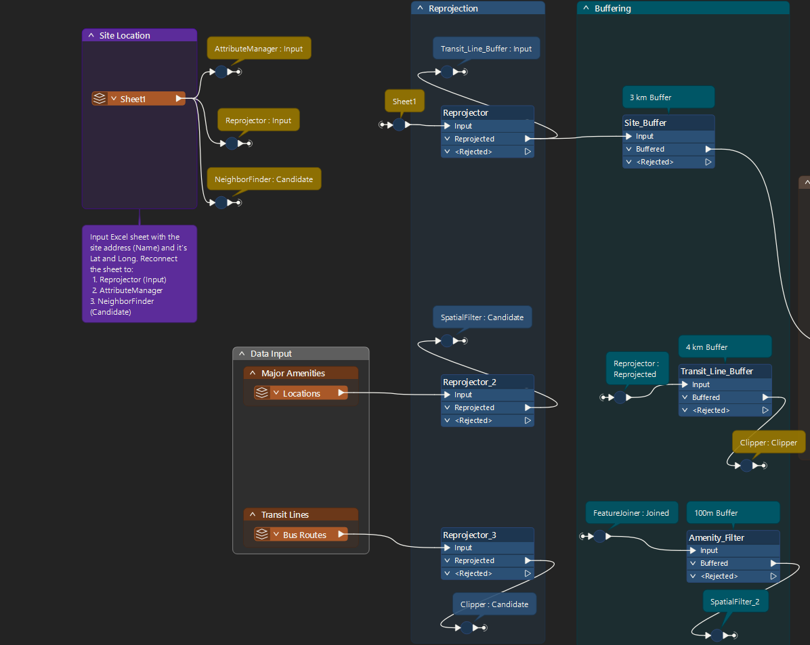

Automation · FME Workflow
An automated FME workflow that transforms a site address into a design-ready KMZ file containing nearby amenities and transit infrastructure, streamlining what was previously a manual process.
Amenity maps are a standard element of CBRE marketing brochures, and each one was being assembled by hand. The goal was to automate everything up to the design stage by creating a workflow that takes a site address and generates a clean, editable KMZ output.

Step 1: Input Data
Step 1 of 3What was a manual per-listing build is now a repeatable run: change the input row, re-run, get a consistent output. The bigger win is consistency — every brochure map now uses the same categories and the same catchment logic, so outputs don't vary by whoever built them. Adding a new city or a new amenity category is a reader change, not a rebuild.